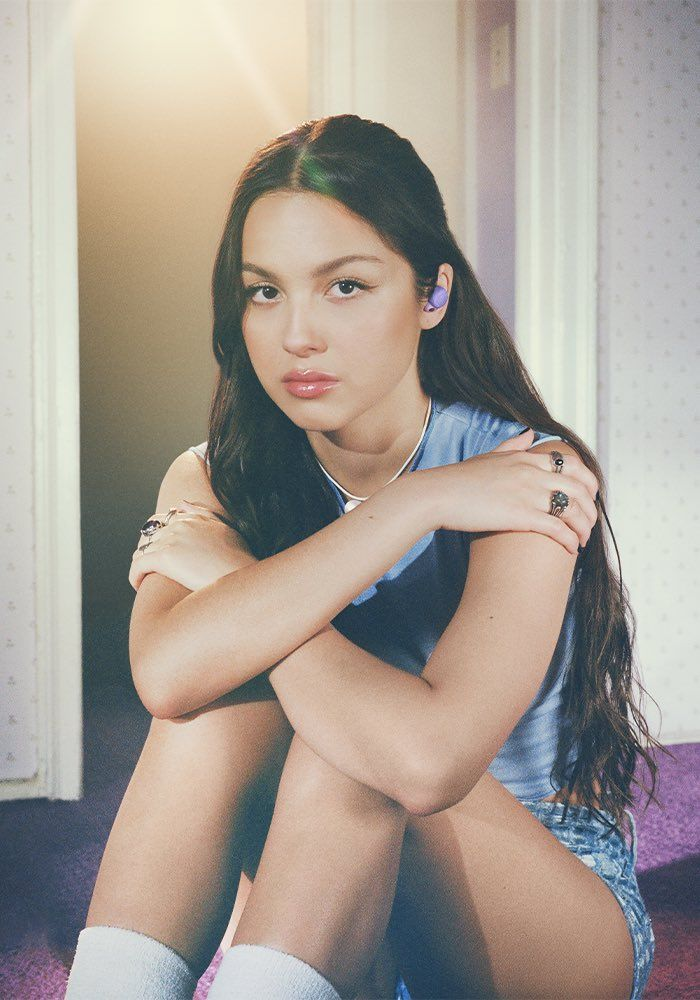

Olivia Rodrigo
Início | Vida e Carreira |
Olivia Isabel Rodrigo
é uma cantora, compositora e atriz norte-americana. Ela alcançou a fama pela primeira vez como atriz infantil nos programas de televisão da Disney Bizaardvark (2016–2019) e High School Musical: The Musical: The Series (2019–2022).
Após assinar com Geffen e Interscope Records em 2020, Rodrigo lançou seu single de estreia, "Drivers License", que quebrou vários recordes e se tornou uma das canções mais vendidas de 2021, impulsionando-a para a fama mainstream. Ela seguiu com os singles "Deja Vu" e "Good 4 U", e lançou seu primeiro álbum de estúdio, Sour, em 2021, que obteve sucesso comercial e de crítica, ganhando vários prêmios, incluindo três prêmios Grammy. Um documentário da Disney+, Olivia Rodrigo: Driving Home 2 U, foi lançado em 2022, narrando seu processo criativo com Sour.
Em 2023, Rodrigo lançou seu segundo álbum de estúdio, Guts, apoiado pelos singles "Vampire" e "Bad Idea Right?". Rodrigo alcançou três singles número um na Billboard Hot 100, dois álbuns número um na Billboard 200 e cinco certificações multiplatina pela Recording Industry Association of America (RIAA). Além de outros reconhecimentos, ganhou um American Music Award, sete Billboard Music Awards e três MTV Video Music Awards. Time nomeou-a Artista do Ano de 2021 e a Billboard nomeou-a Mulher do Ano em 2022.
Após assinar com Geffen e Interscope Records em 2020, Rodrigo lançou seu single de estreia, "Drivers License", que quebrou vários recordes e se tornou uma das canções mais vendidas de 2021, impulsionando-a para a fama mainstream. Ela seguiu com os singles "Deja Vu" e "Good 4 U", e lançou seu primeiro álbum de estúdio, Sour, em 2021, que obteve sucesso comercial e de crítica, ganhando vários prêmios, incluindo três prêmios Grammy. Um documentário da Disney+, Olivia Rodrigo: Driving Home 2 U, foi lançado em 2022, narrando seu processo criativo com Sour. Em 2023, Rodrigo lançou seu segundo álbum de estúdio, Guts, apoiado pelos singles "Vampire" e "Bad Idea Right?". Rodrigo alcançou três singles número um na Billboard Hot 100, dois álbuns número um na Billboard 200 e cinco certificações multiplatina pela Recording Industry Association of America (RIAA). Além de outros reconhecimentos, ganhou um American Music Award, sete Billboard Music Awards e três MTV Video Music Awards. Time nomeou-a Artista do Ano de 2021 e a Billboard nomeou-a Mulher do Ano em 2022.